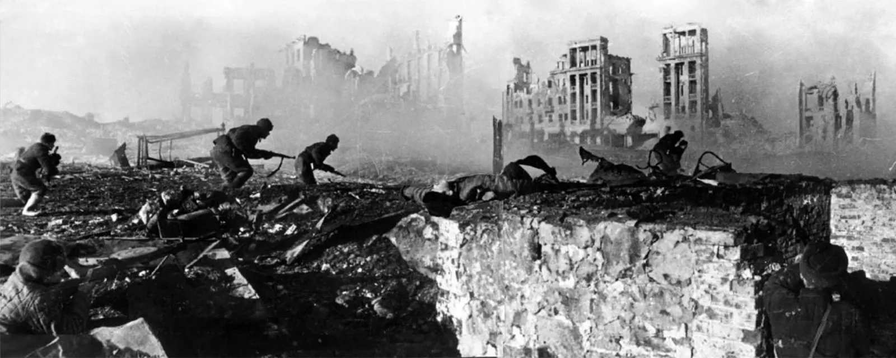

Битка за Стаљинград почела је 23. августа 1942. у оквиру операције Барбароса, немачке инвазије на Совјетски Савез. Хитлерова стратегија је имала за циљ да заузме индустријски град Стаљинград на реци Волги, критичну транспортну руту, која би обезбеђивала леви бок немачког јужног напредовања и задала психолошки ударац Совјетима заузимањем града који носи Стаљиново име. Немци су започели масовну кампању бомбардовања, што је резултирало уништењем већег дела града и великим бројем цивилних жртава. Упркос разарању, совјетске снаге, укључујући 62. армију под командом генерала Василија Чујкова, припремиле су се за очајничку одбрану.
У почетку је немачка 6. армија, којом је командовао генерал Фридрих Паулус, брзо напредовала, потискујући совјетске снаге назад у град. Борбе су се брзо претвориле у бруталну борбу из близине, при чему су обе стране претрпеле велике губитке. Совјети су искористили рушевине града у своју корист, упуштајући се у борбе од куће до куће и претварајући зграде у утврђене положаје. Значајне локације као што су фабрика трактора, Елеватор за жито и Павловљева кућа постале су жаришта интензивних борби.
Прекретница је наступила у новембру 1942. године, када је Совјетски Савез покренуо операцију Уран. Ова стратешка контраофанзива имала је за циљ да опколи немачку 6. армију нападом на слабије румунске и мађарске снаге које су чувале бокове. Операција је била успешна и до краја новембра 6. армија је била опкољена унутар Стаљинграда. Упркос Паулусовим захтевима за пробој или повлачење, Хитлер је наредио 6. армији да задржи своју позицију, обећавајући снабдевање ваздухом – план који се показао логистички немогућим.
До зиме 1942-1943, ситуација за опкољене Немце постала је тешка. Залихе су се смањиле, морал је опао, а оштра руска зима је учинила данак. Совјети су наставили да стежу омчу, покрећући даље офанзиве да сломе џеп. 31. јануара 1943. Паулус, кога је Хитлер унапредио у фелдмаршала (од којег је очекивао да ће починити самоубиство уместо да се преда), капитулирао је. Предаја је завршена 2. фебруара 1943. Битка за Стаљинград завршена је катастрофалним поразом Немаца, што је означило прекретницу на Источном фронту пошто су Совјети преузели стратешку иницијативу.
